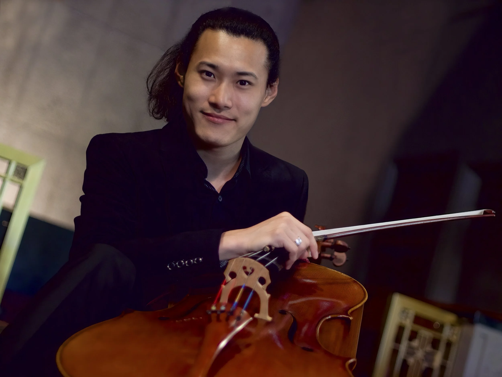

About

Jonah Kim is an artist of great charisma and originality. Kim’s beauty of tone is immediately distinguishable by its signature sweetness. He invites the listener in with “the cosy warmth of a well-loved cashmere sweater,” (Gramophone) then “dives into the music with courage underpinned by formidable technical prowess, with which he achieves a dazzling performance.” (All About the Arts) “One of the very finest American cellists, he brings out things that you possibly never realized were in [the music]. He has that indefinable ‘it’.” (Art Music Lounge) Aside from his cellistic prowess, he is widely regarded as one of the finest musical artists in the world today. The Korean International Arts Review called him “Pablo Casals reincarnate”.
“With his pulsating vibrato and intense expressivity, Kim asserts the cello’s eloquent personality throughout the varied atmospheres.” Donald Rosenberg, Gramophone
Kim made his solo debut with Wolfgang Sawallisch and the Philadelphia Orchestra at 12 years of age. He made his Kennedy Center debut with Marvin Hamlisch and the National Symphony within the year and has since performed with many orchestras around the world. Also an exhilarating recital artist, he has captivated audiences on some of the most prestigious stages around the world. His ensemble Trio Barclay, with pianist Sean Kennard and Pacific Symphony concertmaster Dennis Kim, is in residence at the Barclay Theatre in Orange County, California. They have premiered a new commission for every concert they have played since their inception.
Kim’s passion for chamber music stems from his fellowship at the Curtis Institute of Music in Philadelphia where his ensemble with Joel Link (violinist of the award-winning Dover Quartet) and international piano sensation Yuja Wang performed the piano trio repertoire extensively. He now enjoys collaborating with the leading chamber musicians of our day, partnering with artists like Van Cliburn winner Jon Nakamatsu, Martin Beaver, Scott Yoo (host of PBS docu-series Now Hear This, on which Jonah has made multiple cameos), and Chee-Yun (from the HBO comedy series Curb Your Enthusiasm). He also shared the stage with principal members of ensembles like Orpheus, and the LA and NY Philharmonics, and members of the Tokyo, Formosa and Dover Quartets among numerous others.
“…flawless delivery of its Herculean technical demands… the sense of exhilaration in this performance has us on the edge of our seats.” Joanne Talbot, The Strad
In 2020, Jonah founded Trio Barclay with childhood friends Sean Kennard and Dennis Kim. They have commissioned and premiered a new work for every performance on their home stage as ensemble-in-residence at the Barclay Theatre in Orange County with their debut album set to release in January of 2026. In 2024, Jonah was named artistic director of Festival de Música de Cámara in San Miguel de Allende, now known as the Music Society of San Miguel. He is also founder and director of the San Francisco Music Festival.
Off the stage, one of Kim’s favorite ways to make music is in a recording studio. His debut album on the Delos label features the great romantic sonatas of Rachmaninoff and Barber with pianist Sean Kennard. It released in 2020 to rave reviews. In 2021, Kim released his second album for Delos, Approaching Autumn, titled after the new American work by Mark Abel bridging behemoths, the Kodály Solo and the Grieg sonatas. It was received with further critical acclaim for “[capturing] the very elusiveness that gives the music its substance” (Gramophone) and “flawless delivery of its Herculean technical demands” (The Strad). Kim is joined by Robert Koenig on the piano.
“He flirted with the line, shaped it, wrapped it around his fingers, pulled it out in a new dimension, all with practiced ease.” Anne Midgette, Washington Post
Born in Seoul, South Korea, American cellist Jonah Kim taught himself the cello watching VHS tapes of Pablo Casals. He was awarded full scholarship to The Juilliard School’s Pre-College Division at the age of seven. Growing up in New York City, he played for many of the pedagogues in the area including Aldo Parisot and Harvey Shapiro. Kim then became penpals with Janos Starker who invited him to Bloomington just before his ninth birthday. He continued to study with Starker throughout his career at the Curtis Institute of Music in Philadelphia where he enrolled at eleven years of age. Under the supervision of then Dean Robert Fitzpatrick, he was the first fellow ever to train with multiple instructors, receiving lessons from Orlando Cole, Peter Wiley and Lynn Harrell. Kim defines a truly American school of cello by reconciling the Italian, German, Russian, Franco-Spanish and Hungarian lineages.
Kim’s favorite cello is the award winning “Stella” made in San Francisco by Haide Lin in 2022. Stella is paired with a bow made in Paris in 1904 by Jules Fétique. Kim makes his home in San Francisco with his wife, the respected and beloved American ballerina, Julia Rowe.
Reviews
“A clear, blooming sound graces the opening of the Kodály Solo Sonata… flawless delivery of its Herculean technical demands, Kim particularly triumphs in the Finale… the sense of exhilaration in this performance has us on the edge of our seats.”Joanne Talbot, The Strad
“Kim combines a gorgeous sound and elegance of phrasing… I would rate Kim as one of the very finest American cellists… he has that indefinable ‘it.’”Lynn René Bayley, Art Music Lounge
“A moving and musically satisfying performance... Kim’s full-bodied, rounded cello sound is ideal for the work’s Romantic lyricism.”Janet Banks, The Strad
“Kim and Kennard balance their efforts judiciously… Kim asserts the cello’s eloquent personality throughout the varied atmospheres.”Donald Rosenberg, Gramophone
“Kim has a thorough command of his instrument, with a large, accurate technique, a highly tense lyrical style… Kim showed he could handle its wide range of drama, from near-static introspection to frenzied mania.”Greg Stepanich, Palm Beach Daily News
“Kim's articulate technique elevated the work beyond poignant… he instilled magic. And then he played Paganini… the audience in a second spontaneous standing ovation.”Sherli Leonard, Press Enterprise
“Kim dives into this music with courage underpinned by formidable technical prowess… Kim and Koenig partner beyond perfection.”Rafael de Acha, All About the Arts
“Impactful and dramatic… Kim and Koenig somehow capture the very elusiveness that gives the music its substance.”Andrew Farach-Colton, Gramophone
“Kim’s performance is outstanding – big, brash and gritty as called for in the outer movements; sensitive and lyrical in the Adagio.”David Olds, The WholeNote
“Think Lang Lang, think Yuja Wang. Jonah Kim… is cut from the same cloth… he flirted with the line, shaped it, wrapped it around his fingers, pulled it out in a new dimension, all with practiced ease.”Anne Midgette, Washington Post
“Master of nuance and dynamics… I was reminded of the great violinist Mischa Elman.”Joseph Gold, Piedmont Post
“Chee-Yun joined cellist Jonah Kim… It was a pleasure to hear such an impeccable match of sound from two players… Another standing ovation.”Roger Emanuels, Monterey Performing Arts
“Cellist Jonah Kim [gave] the most vivid and memorable performance of the evening… The standing ovation was punctuated with shouts of bravo.”Scott MacClelland, Performing Arts Monterey